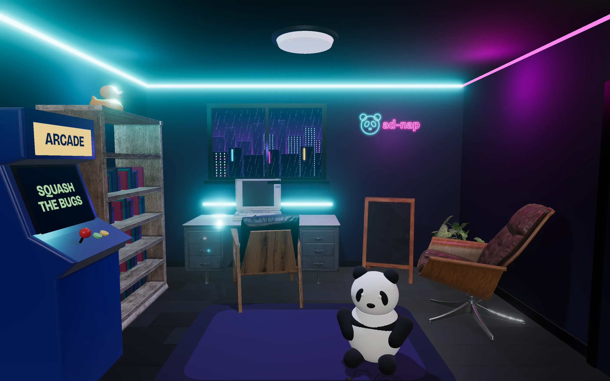

Fun side prototypes
Branch explore/fun-side. Each direction runs the real fun side's content; only the room changes. Compare them with the current room, then pick one.
-

Current: live 3D room
Open the current room -

A: layered diorama
Open the diorama -
B: scroll-scrubbed video
Not built yet.
-
C: CSS 3D room
Not built yet.
-
D: slimmer Three.js
Not built yet.